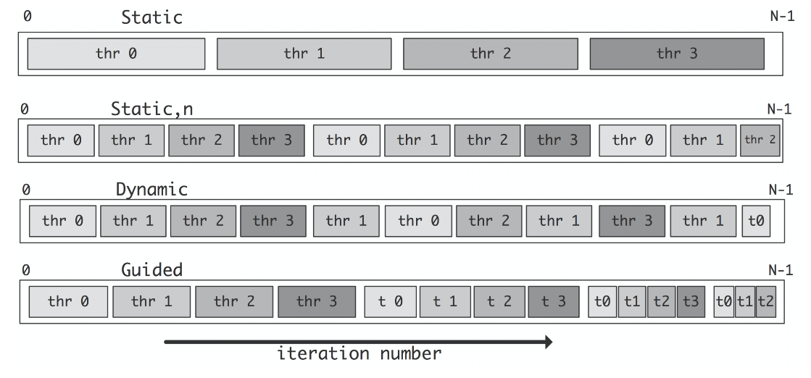

函数
设置要使用的线程数
void omp_set_num_threads(int num_threads);获取当前线程数
int omp_get_num_threads();获取当前线程的编号
int omp_get_thread_num();获取可以使用的最大线程数
int omp_get_max_threads();获取系统中的处理器核心数
int omp_get_num_procs();获取当前时间（以秒为单位），用于计算代码执行时间
double omp_get_wtime();创建并行区域，其中包含并行执行的代码块
#pragma omp parallel { // 并行执行的代码块 }指示一个for 循环可以被并行执行
#pragma omp for for (int i = 0; i < n; i++) { // 并行执行的循环体 }指示代码块被划分为多个独立的部分，并行执行各个部分
#pragma omp sections { #pragma omp section { // 第一部分代码 } #pragma omp section { // 第二部分代码 } // 更多部分... }将一个for 循环并行化，使多个线程并行执行迭代
#pragma omp parallel for for (int i = 0; i < n; i++) { // 并行执行的循环体 }创建一个临界区，在其中只允许一个线程同时执行
#pragma omp critical { // 临界区代码 }对共享变量执行原子操作，确保操作的原子性
#pragma omp atomic { // 原子操作代码 }对共享变量执行归约操作，例如求和、求积等
#pragma omp reduction(operator: variable)在并行指令后添加 reduction(operator: variable)，主要用来保护线程共享的变量。
例子:
#pragma omp parallel for reduction(+:sum) for (int i = 0; i < size; ++i) { sum += array[i]; }
使用指定数量的线程并行
#pragma omp parallel num_threads(nthreads)指定循环迭代的调度方式
#pragma omp for schedule(kind,chunk_size)- kind：static, dynamic, guided
- 静态调度（Static Schedule）：
kind参数为static时，采用静态调度方式。- 静态调度将循环迭代均匀地划分为固定大小的迭代块，每个线程获取一个或多个连续的迭代块。
chunk_size参数表示每个线程获取的连续迭代块的大小。
- 动态调度（Dynamic Schedule）：
kind参数为dynamic时，采用动态调度方式。- 动态调度将循环迭代均匀地划分为较小的迭代块，每个线程获取一个迭代块执行完毕后再获取下一个迭代块。
chunk_size参数表示每个线程获取的迭代块的大小。
- 导引式调度（Guided Schedule）：
kind参数为guided时，采用导引式调度方式。- 导引式调度类似于动态调度，但初始的迭代块较大，逐渐减小。
- 初始迭代块的大小由系统设定，每个线程获取一个迭代块执行完毕后再获取下一个较小的迭代块。
chunk_size参数可以用于指定最小的迭代块大小，如果没有指定，则使用系统设定的默认值。
- 静态调度（Static Schedule）：
- kind：static, dynamic, guided

并行循环结束后避免隐式的同步等待
#pragma omp parallel { #pragma omp for nowait for (i=1; i<n; i++) b[i] = (a[i] + a[i-1]) / 2.0; #pragma omp for nowait for (i=0; i<m; i++) y[i] = sqrt(z[i]); }#pragma omp for指令会在循环结束后进行隐式的同步等待，确保所有线程都完成了循环的执行。这会引入一定的同步开销。注意，使用
nowait指令需要确保循环之后没有任何依赖于循环结果的计算，否则可能会导致错误的结果。将多个嵌套的并行循环合并为一个并行循环
#pragma omp for collapse(2)private(i, k, j) for (k=kl; k<=ku; k+=ks) for (j=jl; j<=ju; j+=js) for (i=il; i<=iu; i+=is) bar(a,i,j,k);默认情况下，
#pragma omp for指令只会并行化最外层的循环，对于嵌套的循环不会进行并行化。#pragma omp for collapse(2)：这是 OpenMP 的并行化指令，表示要并行化下面的嵌套循环。collapse(2)指定将两个嵌套循环（j和i）合并为一个循环，并进行并行化。private(i, k, j)：这是 OpenMP 的私有变量指令，指定了在并行执行中每个线程所使用的私有变量。在这个例子中，i、k、j被声明为私有变量，每个线程都有它们的私有副本，避免了数据竞争。
在并行区域中的每个线程拥有自己的私有副本。
int is_private = -2; #pragma omp parallel private(is_private) { const int rand_tid = rand(); is_private = rand_tid; printf("Thread ID %2d | is_private = %d\n", omp_get_thread_num(), is_private); assert(is_private == rand_tid); }使用
private子句声明了变量is_private为私有变量。每个线程都有自己的is_private变量的副本，且初始值与线程的随机 ID 相同创建并行任务。标记一段代码作为一个独立的任务，该任务可以由可用的线程池中的任何线程执行。
#pragma omp task #pragma omp task priority(i) //i越小优先级越高设置依赖关系
depend in: 在开始前改该变量的修改要结束 out：需要修改变量 inout：两者兼之 mutexinoutset：#pragma omp parallel #pragma omp single { #pragma omp task shared(x) depend(out: x) x = 2; #pragma omp task shared(x) depend(in: x) printf("x = %d\n", x); }遍历中使用并行
void do(...) { ... #pragma omp task do(...); } main(){ #pragma omp parallel #pragma omp single { // Only a single thread should execute this do(...); } }在函数中需要用'#pragma omp task'，在 main 函数中需要采用‘#pragma omp parallel‘和’#pragma omp single’
补充
设置线程数的用法
#pragma omp parallel num_threads(n_thread) { #pragma omp for for (int i = 0; i < size; ++i) ... }等同于
#pragma omp parallel for num_threads(n_thread) for (int i = 0; i < size; ++i) ...
问题
pragma omp parallel for
和#pragma omp for 有什么区别pragma omp parallel for
和#pragma omp for 是 OpenMP 中用于并行化 for 循环的指令。它们的差别在于并行化的方式和默认行为。#pragma omp for指示编译器将其后面的 for 循环并行化执行。编译器根据线程数量自动划分迭代空间，每个线程负责执行一部分迭代。使用#pragma omp for时，需要确保循环的迭代之间不存在数据依赖关系或竞争条件。#pragma omp parallel for与#pragma omp for类似，也是用于并行化 for 循环。但是，#pragma omp parallel for更为灵活，允许更多的控制选项。使用#pragma omp parallel for时，可以设置循环迭代的调度方式（例如静态调度、动态调度等）、指定循环迭代的块大小等。总结来说，
#pragma omp for是一种简化的并行化 for 循环的方式，而#pragma omp parallel for则提供了更多的灵活性和控制选项。如果你只需要简单地并行化 for 循环，#pragma omp for足以满足需求。如果你需要更多的控制权或者对循环迭代的调度方式有特定要求，那么可以使用#pragma omp parallel for。